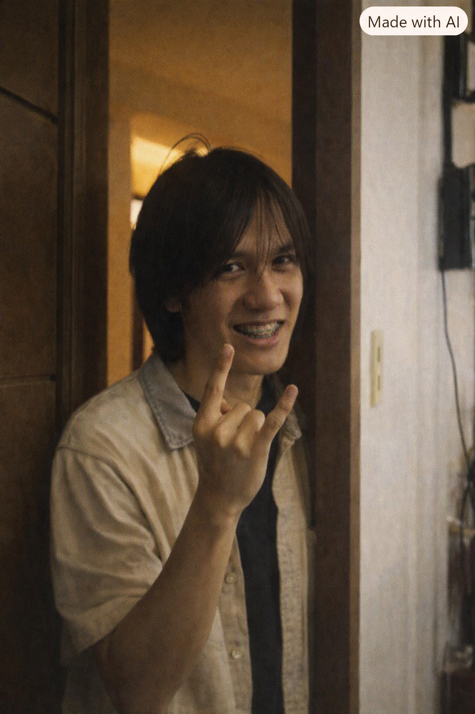

Genre: Pop Rock
Pop Rock Recommendation
Pop rock is where OPM got its biggest hooks: the late-90s and 2000s wave of local bands that took radio-ready guitar riffs and made them unmistakably Pinoy. This list gathers the anthems that defined that era, from breakup ballads to sing-along choruses.
Popular
-
1
 Elesi Rivermaya
Elesi RivermayaAn early Rivermaya single that helped define the band's radio-ready guitar sound.
-
2
Kisapmata Rivermaya
One of Rivermaya's most recognizable hits, still a staple of OPM rock playlists today.
-
3
Pangako Cueshe
A breakup ballad that dominated Filipino radio in the mid-2000s pop rock boom.
-
4
Alapaap Eraserheads
A fan-favorite Eraserheads track known for its euphoric, sky-high sound and cult following.
-
5
Narda Kamikazee
A high-energy anthem named after Darna's alter ego, and a signature Kamikazee live staple.